5 Training, Alignment and Efficiency
5.1 Training and Alignment
A model trained by Equation 3.27, the next-token objective of §3.3, which scores the model on predicting each token of a document from the tokens before it, has learned a great deal about the world. Section 1.1 used Winograd’s sentence about city councilmen who refused demonstrators a permit “because they feared violence” as an example that no grammar can resolve (Definition 1.3). It said that the knowledge which resolves it can be learned only from very large amounts of text. Pre-training at scale supplied that knowledge. Brown and colleagues reported that GPT-3, with no example in its prompt, chose the correct referent on 88.3 per cent of the schemas of the original Winograd test and on 70.2 per cent of the larger and harder WinoGrande set (Brown et al. 2020). They also found that part of the original test had leaked into the training data. Even so, the knowledge is in the weights.
Yet the same model is not something a person can usefully talk to. Given the instruction Summarise this article, a model trained only to continue text may continue it with Then answer the three questions below, because instructions on the web are often followed by more instructions. Given What is the capital of Australia?, it may produce What is the capital of Austria?, because questions in its training text often come in lists. Given a request for instructions to disable a safety device, it continues in the same obliging register as for any other prompt. These three responses are constructed illustrations, not samples from a particular model, of the behaviour that Ouyang and colleagues set out to remove from GPT-3 (Ouyang et al. 2022). They are one failure, not three (Figure 5.1). The model does what Equation 3.27 rewards: it continues the document. Section 3.3 showed the same gap from the side of truth. TruthfulQA asked 817 questions chosen so that a common misconception gives a false answer, and the best model was truthful on 58 per cent of them against 94 per cent for people, with the largest models generally the least truthful (Lin et al. 2022). A model that fits its corpus perfectly reproduces the corpus, errors included.
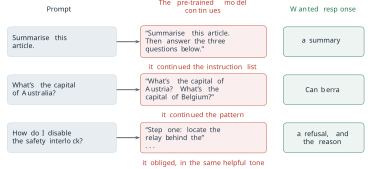
The question this section answers is how such a model is changed into one that answers the question asked, declines the request it should decline and says what is true when it knows it. The difficulty is that none of these properties can be written as a loss. The objective of Equation 3.27 is a real function of the parameters. It is differentiable, it is defined on every token of every document, and its labels cost nothing. Helpful is not a function of the next token. It is a property of a whole response in a whole situation, judged by a person, and there is no formula for it that could be differentiated. Training by gradient descent needs a loss. The behaviour we want does not come with one.
Definition 5.1 (Definition) Alignment is the training that follows pre-training and changes how a model behaves towards the person prompting it: whether it follows the instruction, whether it declines a harmful request, and whether what it says is true. Because the wanted behaviour has no closed-form loss, every alignment method obtains a training signal from some source outside the pre-training corpus and turns that signal into a loss.
Section 4.2 named three of these methods, reinforcement learning from human feedback (RLHF), Constitutional AI and Group Relative Policy Optimization (GRPO), and gave their history and their assumptions. This section builds each of them, together with the supervised stage that precedes them and a fourth method, Direct Preference Optimization (DPO), which learns from the same comparisons as RLHF without a separate reward model. It is organised by the source of the signal. There are four sources in use: demonstrations of good answers, comparisons between answers, written principles, and checks of the outcome. Each was adopted because of something the one before it could not express. Figure 5.2 places them in the order a model meets them: pre-training, then a supervised stage on demonstrations, then a stage that learns from comparisons, principles or outcomes.
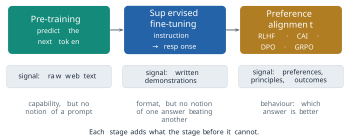
Throughout the section a prompt is a token sequence \(x\) and a response is a token sequence \(y = (y_1, \ldots, y_T)\). A model with parameters \(\theta\) assigns the response the probability
\[ \pi_\theta(y \mid x) = \prod_{t=1}^{T} P\left(y_t \mid x, y_{<t} ; \theta\right) , \tag{5.1}\]
which is the chain rule of Equation 3.27 applied to the tokens after the prompt. Following the reinforcement-learning literature from which several of these methods came, we call \(\pi_\theta\) the policy: a rule that, given a situation \(x\), chooses what to do next. Nothing in the network changes when it is given this name. Only the way it is trained changes.
Demonstrations: supervised fine-tuning
The cheapest signal is an example. A person writes a prompt and the response they would want, and the model is trained on the pair with the loss it already has. The only change is in what is counted.
Definition 5.2 (Definition) Supervised fine-tuning (SFT), also called instruction tuning, continues the training of a pre-trained model on a set \(\mathcal{D}\) of demonstrations, pairs \((x, y)\) of a prompt and a response, by minimising the negative log-probability of the response given the prompt:
\[ \mathcal{L}_{\mathrm{SFT}}(\theta) = - \sum_{(x, y) \in \mathcal{D}} \sum_{t=1}^{T} \log P\left(y_t \mid x, y_{<t} ; \theta\right) = - \sum_{(x, y) \in \mathcal{D}} \log \pi_\theta(y \mid x) . \tag{5.2}\]
Equation 5.2 is Equation 3.27 with its sign changed and its sum restricted. The prompt is in the context of every term, but its own tokens are not predicted, so the model learns to produce the response and not to continue the instruction. The pair is also marked. Special tokens, or a fixed template, separate the instruction from the response, and the template becomes part of what the model expects at inference time (Figure 5.3).
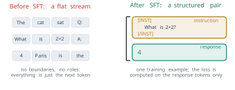
Jason Wei and colleagues at Google showed in 2021 how far this goes, in Finetuned Language Models Are Zero-Shot Learners, presented at ICLR in 2022 (Wei et al. 2022). They took a pre-trained model of 137 billion parameters and fine-tuned it on more than sixty existing datasets, each rewritten as natural-language instructions through a set of templates. The tuned model, FLAN, answered instructions for tasks it had never been tuned on, and without any example in the prompt it beat GPT-3 with 175 billion parameters on 20 of the 25 datasets they evaluated. Their assumption was that the ability to do the tasks was already in the pre-trained weights, and that tuning only taught the model to recognise an instruction as an instruction. Ouyang and colleagues used written demonstrations in the same role as the first stage of InstructGPT: about 13,000 training prompts, with responses written by their labellers (Ouyang et al. 2022). The chat models whose post-training has been published, such as Llama 2 and Llama 3, begin with a stage of this kind.
The limit of Equation 5.2 is in what a demonstration can say. For one prompt, the set of responses the model could produce is enormous, and a demonstration is one point in it. Minimising Equation 5.2 raises the probability of that point and, through the shared parameters, of responses that resemble it. It says nothing about how the other responses compare with one another. Two responses the model itself produced, neither of them the demonstration, may differ greatly in quality, and Equation 5.2 has no term in which that difference could appear (Figure 5.4). There is a second cost. A demonstration must be written in full, and its quality is capped by its writer: to teach a better answer than the labeller can write, the labeller would have to write it.
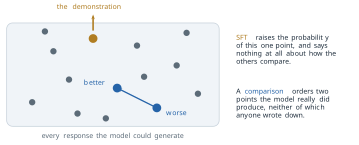
Comparisons: the reward model
A person who cannot write the best answer can usually say which of two answers is better. Scores on an absolute scale are unreliable, because one person’s seven is another’s five and the same person drifts over a day of labelling, but a choice between two responses to the same prompt is far more consistent. The second source of signal is therefore a comparison. The model produces two responses to a prompt, a person says which is better, and a network is trained to predict that choice.
The model of a choice between two items is older than any of this. Ralph Bradley and Milton Terry proposed it in 1952, in Biometrika, for the analysis of paired-comparison experiments such as taste tests (Bradley and Terry 1952). Each item has a strength, and the probability that one item is preferred to another depends only on the difference of their strengths. Paul Christiano and colleagues at OpenAI and DeepMind used the same model in 2017 to learn a reward from human comparisons between short clips of an agent’s behaviour, in tasks where no reward could be written down (Christiano et al. 2017). Nisan Stiennon and colleagues at OpenAI applied it to the summaries of a language model in 2020, in Learning to Summarize from Human Feedback, presented at NeurIPS that year (Stiennon et al. 2020). The assumption, in each case, is that a network fitted to enough comparisons generalises: that it scores sensibly responses that no person ranked.
Definition 5.3 (Definition) A reward model is a network \(r_\phi(x, y)\) with parameters \(\phi\) that maps a prompt and a response to a real number. Under the Bradley-Terry model, the probability that a person prefers response \(y_w\) to response \(y_l\) for prompt \(x\) is
\[ P\left(y_w \succ y_l \mid x\right) = \frac{\exp r_\phi(x, y_w)}{\exp r_\phi(x, y_w) + \exp r_\phi(x, y_l)} = \sigma\left(r_\phi(x, y_w) - r_\phi(x, y_l)\right) , \tag{5.3}\]
where \(\sigma(z) = 1/(1 + e^{-z})\) is the logistic function. Given a set \(\mathcal{D}_{\mathrm{pref}}\) of triples \((x, y_w, y_l)\), in which \(y_w\) is the response the person preferred, the reward model is trained by minimising
\[ \mathcal{L}_{\mathrm{RM}}(\phi) = - \sum_{(x, y_w, y_l) \in \mathcal{D}_{\mathrm{pref}}} \log \sigma\left(r_\phi(x, y_w) - r_\phi(x, y_l)\right) . \tag{5.4}\]
The second form of Equation 5.3 follows by dividing numerator and denominator by \(\exp r_\phi(x, y_w)\). Equation 5.4 is then the cross-entropy of a two-class classifier whose input is a pair and whose logit is the difference of two scores. Write \(\Delta = r_\phi(x, y_w) - r_\phi(x, y_l)\) for that difference. Since \(\frac{d}{dz} \log \sigma(z) = 1 - \sigma(z) = \sigma(-z)\), the derivative of one term of the loss with respect to \(\Delta\) is
\[ \frac{\partial}{\partial \Delta} \left( - \log \sigma(\Delta) \right) = - \sigma(-\Delta) . \tag{5.5}\]
A pair the model already orders correctly by a wide margin has \(\sigma(-\Delta)\) near zero and contributes almost nothing. A pair it orders the wrong way by a wide margin has \(\sigma(-\Delta)\) near one and contributes almost the full gradient, which raises the winner’s score and lowers the loser’s. Take a pair with scores \(r_\phi(x, y_w) = 1.5\) and \(r_\phi(x, y_l) = 0.3\). Then \(\Delta = 1.2\), the model gives the person’s choice the probability \(\sigma(1.2) = 0.77\), the loss is \(-\log 0.77 = 0.26\), and the gradient with respect to \(\Delta\) is \(-0.23\). Had the scores been the other way round, the probability would be \(0.23\), the loss \(1.46\) and the gradient \(-0.77\).
Two properties of Equation 5.3 matter later. The first is that only differences of reward enter it. Adding any function of the prompt alone, \(r_\phi(x, y) + c(x)\), leaves every probability unchanged, so the reward is defined only up to such a shift. The second is that nothing in the loss is a reinforcement-learning quantity. The reward model is an ordinary supervised network trained on labelled pairs, usually a copy of the pre-trained model with its output layer replaced by a single number (Figure 5.5). In InstructGPT it had 6 billion parameters. Labellers ranked between four and nine responses to each prompt, and every pair from one ranking became a training example, so a ranking of \(K\) responses gave \(\binom{K}{2}\) comparisons (Ouyang et al. 2022).
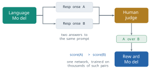
Optimising against the reward
A reward model scores responses. It does not yet change the language model, and the obvious way to use it does not work. The reward depends on a response that the model samples, one discrete token at a time, and sampling has no derivative. We cannot back-propagate from \(r_\phi(x, y)\) through the choice of \(y\) into \(\theta\). What we can do is change \(\theta\) so that responses with high reward become more probable. That is the problem reinforcement learning solves, and the objective it optimises here is the following.
Definition 5.4 (Definition) Reinforcement learning from human feedback (RLHF) trains the policy \(\pi_\theta\), initialised from the supervised model, to maximise
\[ J(\theta) = \mathbb{E}_{x \sim \mathcal{D}_x,\; y \sim \pi_\theta(\cdot \mid x)} \left[ r_\phi(x, y) \right] - \beta \, \mathbb{E}_{x \sim \mathcal{D}_x} \left[ D_{\mathrm{KL}}\left( \pi_\theta(\cdot \mid x) \,\|\, \pi_{\mathrm{ref}}(\cdot \mid x) \right) \right] , \tag{5.6}\]
where \(\mathcal{D}_x\) is a set of prompts, \(r_\phi\) is a fixed reward model, \(\pi_{\mathrm{ref}}\) is a frozen copy of the supervised model, \(\beta > 0\) is a coefficient, and
\[ D_{\mathrm{KL}}\left( \pi_\theta(\cdot \mid x) \,\|\, \pi_{\mathrm{ref}}(\cdot \mid x) \right) = \mathbb{E}_{y \sim \pi_\theta(\cdot \mid x)} \left[ \log \frac{\pi_\theta(y \mid x)}{\pi_{\mathrm{ref}}(y \mid x)} \right] . \tag{5.7}\]
The first term asks for responses the reward model scores highly. The second charges the policy for moving away from the model it started from, and \(\beta\) is the price: the amount of reward the policy must gain to justify one nat of divergence. A nat is the unit a divergence has when its logarithm is the natural one, as every logarithm in this section is. By Equation 5.1, the logarithm inside Equation 5.7 is a sum over the tokens of the response of \(\log P(y_t \mid x, y_{<t}; \theta) - \log P_{\mathrm{ref}}(y_t \mid x, y_{<t})\), so the divergence of a sampled response can be computed from two forward passes, one through each model. Both terms of Equation 5.6 are expectations over responses the policy itself samples, and that is why it needs a different gradient from the one of Equation 5.2.
The gradient comes from a short identity. For a fixed prompt write \(R(y)\) for any score of a response that does not depend on \(\theta\). Then
\[ \nabla_\theta \, \mathbb{E}_{y \sim \pi_\theta} \left[ R(y) \right] = \sum_y R(y) \, \nabla_\theta \pi_\theta(y \mid x) = \sum_y R(y) \, \pi_\theta(y \mid x) \, \nabla_\theta \log \pi_\theta(y \mid x) = \mathbb{E}_{y \sim \pi_\theta} \left[ R(y) \, \nabla_\theta \log \pi_\theta(y \mid x) \right] , \tag{5.8}\]
where the middle step uses \(\nabla \pi = \pi \nabla \log \pi\). The right-hand side can be estimated by sampling responses, scoring them, and weighting the gradient of each response’s log-probability by its score. This is the policy gradient, in the form Ronald Williams gave it in 1992 under the name REINFORCE (Williams 1992). Comparing it with Equation 5.2 shows what it does. Supervised fine-tuning raises the log-probability of a response someone wrote. The policy gradient raises the log-probability of the model’s own response in proportion to its score, and lowers it when the score is negative.
Because \(\sum_y \nabla_\theta \pi_\theta(y \mid x) = \nabla_\theta 1 = 0\), any quantity \(b(x)\) that does not depend on \(y\) can be subtracted from \(R(y)\) without changing the expectation in Equation 5.8. Such a baseline matters in practice. If every response to a prompt scores about 5, the raw estimate pushes all of them up and relies on small differences between large numbers to tell them apart. With \(b(x) = 5\) the better responses are pushed up and the worse ones down. The quantity \(A(x, y) = R(y) - b(x)\) is called the advantage of the response. The best baseline is close to the expected score of a response to \(x\), and in the method used for RLHF it is estimated by a fourth network, the value model, trained alongside the policy.
That method is proximal policy optimization (PPO), introduced by John Schulman and colleagues at OpenAI in 2017 (Schulman et al. 2017). PPO reuses each batch of sampled responses for several gradient steps, and to keep the policy from moving too far from the one that sampled them it clips the ratio \(\rho = \pi_\theta(y \mid x) / \pi_{\mathrm{old}}(y \mid x)\) between the current policy and the sampling policy:
\[ J_{\mathrm{PPO}}(\theta) = \mathbb{E} \left[ \min\left( \rho \, A, \; \operatorname{clip}(\rho, 1 - \epsilon, 1 + \epsilon) \, A \right) \right] , \tag{5.9}\]
with \(\epsilon\) typically 0.2. In practice the ratio and the advantage are taken token by token, but the idea is the one of Equation 5.8. For RLHF the score of a sampled response is the reward of Equation 5.6 with the divergence charged on that sample, \(R(x, y) = r_\phi(x, y) - \beta \log \left( \pi_\theta(y \mid x) / \pi_{\mathrm{ref}}(y \mid x) \right)\), whose expectation over \(y\) is \(J(\theta)\) for that prompt. Four networks are therefore in memory during training: the policy being trained, the frozen reference, the frozen reward model and the value model. Figure 5.6 shows the cycle with all four: sample, score, update, sample again. The value model sits inside the PPO update, and the frozen reference model feeds the KL penalty.
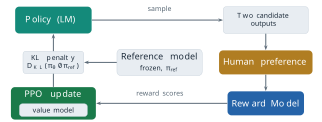
Long Ouyang and colleagues at OpenAI ran this pipeline on GPT-3 in 2022 (Ouyang et al. 2022). Its three stages, supervised fine-tuning on demonstrations, a reward model trained on rankings and PPO against that reward model, produced InstructGPT. As §4.2 reported, labellers preferred the answers of the 1.3-billion-parameter InstructGPT to those of the 175-billion-parameter GPT-3. The method also answered part of the question with which this section opened. On TruthfulQA, InstructGPT gave answers that were both truthful and informative about twice as often as GPT-3. The gain was modest. The paper reports the supervised model and the PPO models separately, and since the pre-trained model was the same throughout, the gain came from fine-tuning on the demonstrations and the comparisons, not from pre-training. Ouyang and colleagues also measured a cost, which they called an alignment tax: after PPO, the model did worse on some standard benchmarks than GPT-3 had. They reduced it by mixing the gradient of Equation 3.27 on pre-training data into the PPO update. The same recipe, with minor differences in how the data were collected, trained ChatGPT, released in November 2022 (OpenAI 2022).
The coefficient \(\beta\) is a number someone has to choose, and a small example shows what it decides. Suppose that for one prompt the policy can give either of two responses. The first is padded and flattering, the kind of answer a reward model may overrate: it scores \(r_\phi = 8.0\), and producing it has taken the policy \(3.0\) nats from the reference. The second is direct and accurate and close to what the supervised model would have said: it scores \(6.0\) at a divergence of \(0.5\) nats. Under Equation 5.6 the value of each is its reward minus \(\beta\) times its divergence,
\[ 8.0 - 3.0\,\beta \quad \text{and} \quad 6.0 - 0.5\,\beta . \tag{5.10}\]
They are equal when \(2.0 = 2.5\,\beta\), that is at \(\beta = 0.8\). Below that value the objective prefers the padded response, because its extra 2.5 nats of drift cost less than the two points of reward they buy. Above it the objective prefers the faithful one. The example is constructed, but it shows the role of \(\beta\) exactly. The reward model has a preference, the reference model has another, and \(\beta\) sets the exchange rate between them.
Without the second term the exchange rate is zero, and the policy is free to move as far from the reference as the reward model rewards. Daniel Ziegler and colleagues at OpenAI, in Fine-Tuning Language Models from Human Preferences in 2019, one of the first applications of preference learning to a pre-trained language model, included the penalty for that reason (Ziegler et al. 2019). Their reference was the pre-trained language model itself, since their pipeline had no stage of supervised demonstrations. In the three-stage pipeline it is the supervised model. Either way, the divergence from the reference keeps the text in the region where the reward model was trained, and where language is still fluent. The assumption is that the reference is a good place to stay near: that whatever the reward model asks for can be found within a modest divergence of it. Figure 5.7 draws the two regimes schematically.
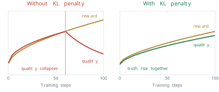
Reward hacking
The penalty keeps the language fluent. It does not make the reward model right. A reward model is a network fitted to a finite set of comparisons, and its score is a proxy for the judgement of the people who made them. Optimising a proxy hard enough finds the places where it differs from what it stands for. The economist Charles Goodhart made the point about monetary targets in 1975: a statistical regularity tends to collapse once pressure is placed on it for control purposes (Goodhart 1975). The form usually quoted, when a measure becomes a target, it ceases to be a good measure, is Marilyn Strathern’s, from an essay on university audit in 1997 (Strathern 1997).
Definition 5.5 (Definition) Reward hacking, or reward over-optimisation, is the regime in which further optimisation of a policy against a learned reward model raises the reward model’s score but lowers the quality of the responses. Quality here is judged by the people whose preferences the reward model was trained to predict.
Stiennon and colleagues observed it in their summarisation work: past a certain divergence from the reference, summaries that the reward model scored ever higher were rated worse by people (Stiennon et al. 2020). Leo Gao, John Schulman and Jacob Hilton at OpenAI measured it systematically in Scaling Laws for Reward Model Overoptimization, presented at ICML in 2023 (Gao et al. 2023). Repeating the experiment with human labellers at every point would have been too expensive, so they used a synthetic setting. A large reward model played the part of the human, called the gold reward, and smaller proxy reward models were trained on labels it produced. The policy was optimised against a proxy and scored by the gold model. Writing \(d = \sqrt{D_{\mathrm{KL}}(\pi \,\|\, \pi_{\mathrm{ref}})}\) for the square root of the divergence spent, they found that the gold reward under reinforcement learning followed
\[ R_{\mathrm{gold}}(d) = d \left( a - b \log d \right) , \tag{5.11}\]
with coefficients \(a\) and \(b\) that varied smoothly with the size of the proxy reward model. The gold reward rises, peaks and falls, while the proxy reward keeps rising (Figure 5.8). The assumption of the result is that the gold model is a fair stand-in for people, and its use is that the point of divergence can be budgeted for before a run rather than discovered during it. It also suggests that an RLHF run should be judged on held-out human ratings as well as on its own reward.
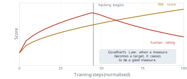
Principles: Constitutional AI
RLHF has two costs that are not mathematical. The comparisons must keep coming: a new model, a new kind of prompt or a newly discovered failure each needs new labels. And the standard being applied is nowhere written down. It is spread across many thousands of individual judgements, and nobody can read it, audit it or dispute it. Yuntao Bai and colleagues at Anthropic addressed both for one part of the problem in December 2022, in Constitutional AI: Harmlessness from AI Feedback (Bai et al. 2022).
Definition 5.6 (Definition) Constitutional AI replaces human labels for harmlessness with a written list of principles, the constitution, applied by a language model. It has two stages. In the supervised stage the model answers a prompt and is asked to critique its answer against a principle drawn from the constitution. It is then asked to revise the answer in the light of the critique, and the model is fine-tuned by Equation 5.2 on the revised answers. In the reinforcement stage the fine-tuned model produces pairs of responses, a model is asked which of each pair better satisfies a principle, and those judgements serve as the comparisons of Equation 5.4 for a preference model, against which the policy is trained as in Equation 5.6.
The second stage is RLHF with the human replaced by a model, and the authors called it reinforcement learning from AI feedback. The two stages use the critique differently, and the difference matters. The revision of an answer is used as a demonstration, a better target for Equation 5.2. It is not paired with the original answer as a comparison. The comparisons come from the second stage, where the model judges two samples of the policy against a principle, in the form of a multiple-choice question, and its probabilities for the two choices are used as soft labels. Human labels were not removed altogether. Comparisons for helpfulness were still collected from people, and the preference model was trained on the human helpfulness comparisons and the AI harmlessness comparisons together (Figure 5.9).
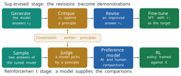
The assumptions are two. A written standard, applied by a capable model to its own outputs, can stand in for human judgement of harm. And the model is capable enough to apply it, which Bai and colleagues found to improve with model size. What is gained is that the standard can be read. The constitution is a document, and changing what the model is trained towards means changing the document, where under RLHF it means changing the labellers’ instructions and collecting new labels. What is not gained is any guarantee that the principles are right or complete: the method is exactly as good as the text it is given.
Removing the reward model: Direct Preference Optimization
Return to Equation 5.6. To optimise it, RLHF trains a reward model on comparisons, then runs PPO with four networks in memory, sampling responses throughout. Rafael Rafailov and colleagues at Stanford asked in 2023 whether the reward model was needed as a separate network at all, in Direct Preference Optimization: Your Language Model Is Secretly a Reward Model, presented at NeurIPS that year (Rafailov et al. 2023). Their answer rests on the fact that Equation 5.6, for a fixed reward, can be solved in closed form.
Fix a prompt \(x\) and drop it from the notation. The objective, for one prompt, is \(\sum_y \pi(y) r(y) - \beta \sum_y \pi(y) \log \left( \pi(y) / \pi_{\mathrm{ref}}(y) \right)\), to be maximised over all distributions \(\pi\). Define
\[ \pi^{*}(y) = \frac{1}{Z} \, \pi_{\mathrm{ref}}(y) \exp\left( \frac{r(y)}{\beta} \right), \qquad Z = \sum_y \pi_{\mathrm{ref}}(y) \exp\left( \frac{r(y)}{\beta} \right) , \tag{5.12}\]
so that \(r(y) = \beta \log \left( \pi^{*}(y) / \pi_{\mathrm{ref}}(y) \right) + \beta \log Z\). Substituting this expression for \(r\) into the objective, the two \(\pi_{\mathrm{ref}}\) terms cancel, \(\beta \log Z\) leaves the sum because the probabilities \(\pi(y)\) add up to one, and what remains is a divergence from \(\pi^{*}\):
\[ \sum_y \pi(y) \left[ \beta \log \frac{\pi^{*}(y)}{\pi_{\mathrm{ref}}(y)} + \beta \log Z - \beta \log \frac{\pi(y)}{\pi_{\mathrm{ref}}(y)} \right] = \beta \log Z - \beta \, D_{\mathrm{KL}}\left( \pi \,\|\, \pi^{*} \right) . \tag{5.13}\]
The first term does not depend on \(\pi\), and a divergence is zero exactly when its two arguments are equal, so the maximum of Equation 5.6 over all distributions is reached at \(\pi = \pi^{*}\). The best policy is the reference reweighted by the exponential of the reward, with \(\beta\) as a temperature.
Now read Equation 5.12 the other way. Any policy \(\pi_\theta\) that is optimal for some reward determines that reward, up to the term \(\beta \log Z(x)\):
\[ r(x, y) = \beta \log \frac{\pi_\theta(y \mid x)}{\pi_{\mathrm{ref}}(y \mid x)} + \beta \log Z(x) . \tag{5.14}\]
The partition function \(Z(x)\) is a sum over every possible response and cannot be computed. It does not have to be. It depends on the prompt alone, and the Bradley-Terry model of Equation 5.3 sees only differences of reward between two responses to the same prompt, so the term cancels. Putting Equation 5.14 into Equation 5.4 gives a loss on the policy itself.
Definition 5.7 (Definition) Direct Preference Optimization (DPO) trains the policy \(\pi_\theta\) directly on comparisons \((x, y_w, y_l)\) by minimising
\[ \mathcal{L}_{\mathrm{DPO}}(\theta) = - \sum_{(x, y_w, y_l) \in \mathcal{D}_{\mathrm{pref}}} \log \sigma\left( \beta \log \frac{\pi_\theta(y_w \mid x)}{\pi_{\mathrm{ref}}(y_w \mid x)} - \beta \log \frac{\pi_\theta(y_l \mid x)}{\pi_{\mathrm{ref}}(y_l \mid x)} \right) , \tag{5.15}\]
where \(\pi_{\mathrm{ref}}\) is the frozen supervised model. The quantity \(\hat{r}_\theta(x, y) = \beta \log \left( \pi_\theta(y \mid x) / \pi_{\mathrm{ref}}(y \mid x) \right)\) is called the implicit reward of the policy.
Equation 5.15 is Equation 5.4 with \(r_\phi\) replaced by \(\hat{r}_\theta\). Nothing about the loss has changed except what the score means: the reward of a response is now how far training has raised its log-probability above the reference, scaled by \(\beta\). The reward model has not been removed from the problem. It has been solved for and substituted, and the policy is the reward model (Figure 5.10). Its gradient shows what training does. Writing \(\hat{r}_w\) and \(\hat{r}_l\) for the implicit rewards of the two responses, the derivative of Equation 5.5 and the chain rule give, for one comparison,
\[ \nabla_\theta \mathcal{L}_{\mathrm{DPO}} = - \beta \, \sigma\left( \hat{r}_l - \hat{r}_w \right) \left[ \nabla_\theta \log \pi_\theta(y_w \mid x) - \nabla_\theta \log \pi_\theta(y_l \mid x) \right] . \tag{5.16}\]
Each step raises the log-probability of the preferred response and lowers that of the other, weighted by how wrongly the implicit reward currently orders them. A pair already ordered correctly by a wide margin contributes little, as in Equation 5.5.
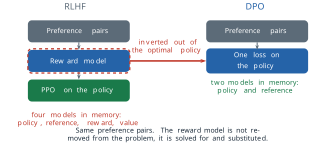
A numerical case makes Equation 5.15 concrete. Take \(\beta = 0.1\), and suppose that after some training the policy gives the preferred response a log-probability 0.5 nats above the reference and the other response one 0.3 nats below it. The implicit rewards are \(\hat{r}_w = 0.05\) and \(\hat{r}_l = -0.03\), their difference is \(0.08\), and the loss for the pair is \(-\log \sigma(0.08) = -\log 0.520 = 0.654\), only a little below its starting value of \(\log 2 = 0.693\) when the policy equals the reference. The weight in Equation 5.16 is \(\sigma(-0.08) = 0.48\), close to its starting value of one half at the start. The small \(\beta\) means that a large change of log-probability is needed before the loss regards a pair as settled, which keeps the policy near the reference in the same way as the penalty of Equation 5.6.
The method needs two networks in memory, the policy and the frozen reference, and no sampling during training: the responses in the comparisons are fixed in advance, so each step is an ordinary pass of supervised learning. This simplicity is one reason it was taken up widely in openly released models. Llama 3, for example, was post-trained by rounds of supervised fine-tuning, rejection sampling and DPO (Grattafiori et al. 2024). The assumptions are those of the derivation. The Bradley-Terry model must describe the preferences, and the policy class must be rich enough for Equation 5.12 to be reachable. And the data are offline. RLHF scores responses the current policy samples, so its reward model is queried where the policy actually goes. DPO learns only from the responses in its data set, which were sampled from some earlier model, and it has no signal about responses that the training moves probability towards but that no comparison contains.
Outcomes: Group Relative Policy Optimization
Every method so far needs a person somewhere: to write a demonstration, to compare two answers, or to write the principles. For some tasks the person is unnecessary. A mathematics problem with a known answer, or a program with a test suite, can be checked by a rule, and the check is exact. This fourth source of signal is the outcome itself: a reward of 1 if the final answer is correct and 0 if it is not.
A reward of 0 or 1 is not yet a useful training signal. If a hard problem is answered correctly in one attempt out of a hundred, a raw reward pushes up that one attempt and ignores the rest. If an easy problem is always answered correctly, the raw reward pushes up every attempt equally and teaches nothing. What matters is how one attempt did compared with what was expected for that problem, which is the advantage of Equation 5.8. PPO estimates the expected score with its value model. Zhihong Shao and colleagues at DeepSeek replaced it, in DeepSeekMath in February 2024, with a statistic of the model’s own samples (Z. Shao et al. 2024).
Definition 5.8 (Definition) Group Relative Policy Optimization (GRPO) samples a group of \(G\) responses \(y_1, \ldots, y_G\) to the same prompt from the current policy, scores each with a reward \(r_i\), and gives each response the advantage
\[ A_i = \frac{r_i - \operatorname{mean}(r_1, \ldots, r_G)}{\operatorname{std}(r_1, \ldots, r_G)} . \tag{5.17}\]
The policy is then updated by the clipped objective of Equation 5.9 with \(A_i\) as the advantage of every token of \(y_i\), averaged over the tokens of each response and over the group, minus \(\beta\) times an estimate of the divergence from the reference policy.
The group mean is the baseline. It estimates the expected reward for this prompt from the samples themselves, which is the job PPO gives to a value model, and so GRPO holds three networks in memory where PPO holds four: the policy, the reference and whatever produces the reward. Shao and colleagues sampled 64 responses for each question. Dividing by the standard deviation puts the advantages of every prompt on the same scale, whether the rewards are 0 and 1 or come from a model.
Take a group of four responses to one problem, of which the third is correct (Figure 5.11). The rewards are \((0, 0, 1, 0)\) and their mean is \(0.25\). The deviations from the mean are \(-0.25\) three times and \(+0.75\) once, so the variance, dividing by the group size, is \(\frac{1}{4}\left(3 \times 0.0625 + 0.5625\right) = 0.1875\), and the standard deviation is \(\sqrt{0.1875} \approx 0.433\). By Equation 5.17,
\[ A_3 = \frac{1 - 0.25}{0.433} \approx +1.73, \qquad A_1 = A_2 = A_4 = \frac{0 - 0.25}{0.433} \approx -0.58 . \tag{5.18}\]
The correct response is pushed up strongly and each wrong one is pushed down a third as much. The four advantages sum to zero, as advantages centred on their mean always do. The paper writes the standard deviation without saying which divisor it uses, and implementations differ. With \(G - 1 = 3\) in the divisor, the standard deviation is \(0.5\) and the advantages are \(+1.5\) and \(-0.5\). The direction of every push is unchanged, and only its size changes. One case needs care. If every response in a group receives the same reward, the standard deviation is zero, every advantage is zero after the small constant implementations add to the divisor, and the problem contributes no gradient. A problem the model always solves, or never solves, teaches it nothing. The signal comes from problems at the edge of its ability.
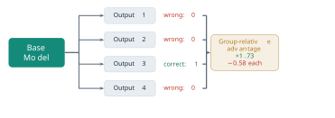
It is easy to misstate what GRPO removes. It removes the value model, the critic of PPO. It does not remove the reward, and it does not by itself remove the reward model. In DeepSeekMath the responses were scored by a learned reward model, trained on mathematical answers, and the group baseline was applied to its scores (§4.2). The reward model disappears only when the reward can be computed by a rule, and that is a choice about the task, separate from the choice of optimiser. DeepSeek-AI made that choice for R1 in January 2025, with one reward for a correct final answer and one for the required output format (DeepSeek-AI 2025). Its first version, R1-Zero, was trained in this way directly from the pre-trained model, with no supervised stage and no learned reward model, and it learned to produce long chains of reasoning that nobody had written for it, because longer reasoning got more answers right. The released R1, as §4.2 described, did use a few thousand written reasoning examples before its reinforcement stage and learned reward models for general prompts after it.
The assumption of an outcome reward is that the task has a checkable answer. Where it does, the signal is cheap, exact and unlimited, and it can teach behaviour that no labeller could demonstrate. Where it does not, as for the tone of a reply or the quality of a summary, there is nothing to check. A rule can also be satisfied in ways its author did not intend. A reward for a correct final answer says nothing about whether the reasoning that led to it was sound, and a reward for passing tests says nothing about code the tests do not reach. Reward hacking is a property of every proxy, and a rule is a proxy too.
Four sources of signal
Each method of this section answers the question of Definition 5.1 in a different way: where the signal comes from, given that the wanted behaviour has no loss. Figure 5.12 places the four answers on one line, ordered by the human work each training example costs, and Table 5.1 sets out what each can and cannot express.
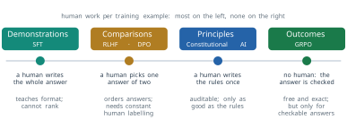
| Source | Methods | Supplied by | Can express | Cannot express |
|---|---|---|---|---|
| Demonstrations | SFT, Equation 5.2 | a person writing each answer | the format of an answer; behaviour the writer can produce | which of two answers is better; anything better than the writer |
| Comparisons | RLHF, Equation 5.6; DPO, Equation 5.15 | a person choosing between two answers | an ordering of the model’s own answers, for qualities no one can define | a standard anyone can read; it needs labelling for as long as training continues |
| Principles | Constitutional AI, Definition 5.6 | a written constitution, applied by a model | a standard that can be read, audited and changed | qualities the principles do not name; it is as good as the text |
| Outcomes | GRPO with a rule-based reward, Equation 5.17 | a check of the final answer | correctness, exactly and without limit | anything without a checkable answer |
The table also shows that the methods are not rivals. A deployed model is usually trained with several of them in sequence, since each source supplies what the one before it cannot. Consider three tasks. A support assistant must match a company’s tone across thousands of replies. Nobody can write the rule for that tone, but any employee can choose the better of two replies, so the signal is a comparison. A model must solve competition mathematics problems. The final answer can be checked, so the signal is the outcome. A summariser for a regulated industry must follow style rules that are already written down. The rules are a constitution, so the signal is a set of principles. None of the three is trained on demonstrations alone, and each would start from them.
Askell and colleagues at Anthropic summarised the aim of this training in 2021 as an assistant that is helpful, honest and harmless (Askell et al. 2021). None of these properties is a product of pre-training. Each is put there by a later stage, from the sources in Table 5.1 (Figure 5.13). Helpfulness comes mostly from demonstrations and comparisons, and harmlessness from comparisons or principles. Honesty comes, to the limited extent that any of these methods supplies it, from comparisons and principles that favour true answers over false ones.
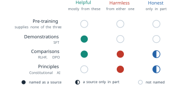
What the methods assume and where they fail
Every method in this section rests on a proxy for what is wanted, and its assumptions are the assumptions that the proxy is faithful.
- Supervised fine-tuning assumes the capability is already in the pre-trained weights and needs only to be given a format. It cannot exceed its writers and cannot rank.
- RLHF assumes that the comparisons of a group of labellers stand for helpful and honest behaviour, that the Bradley-Terry model describes them, and that the reward model generalises to the responses the policy will produce. Optimised hard enough, it finds where the reward model is wrong (Definition 5.5), and it pays an alignment tax on other tasks.
- Constitutional AI assumes a written standard, applied by a model to itself, can replace human judgement of harm. It cannot be better than its constitution.
- DPO makes the assumptions of RLHF and adds one: that comparisons collected in advance cover the responses training will make likely.
- GRPO with outcome rewards assumes the answer can be checked. It says nothing about what cannot be checked, and a rule can be satisfied in unintended ways.
Two limits are shared. The first is that none of these objectives measures truth directly. Each measures what a person, a principle or a rule approves, and a model trained to win approval can learn to say what its judges prefer. The gain of InstructGPT on TruthfulQA was real and partial for this reason. The second limit is outside the objectives altogether. Every method here assumed that the model, once trained, can be run. A model of 405 billion parameters stored as 16-bit numbers needs about 810 gigabytes for its weights alone, before the cache of §4.2 holds a single conversation. The next section turns to the cost of serving a model and to the methods that reduce it.
Exercises
A reward model gives three responses to one prompt the scores \(r_A = 2.0\), \(r_B = 1.0\) and \(r_C = -0.5\). (a) Use Equation 5.3 to compute the probability that a person prefers \(A\) to \(B\), \(B\) to \(C\) and \(A\) to \(C\). (b) Add 10 to every score and repeat. Explain why the answers do not change, and what this implies about the meaning of a single reward value. (c) A labeller ranks nine responses to a prompt. How many training pairs does the ranking give?
- Derive Equation 5.5 from Equation 5.4. (b) A reward model scores a pair \(1.5\) for the preferred response and \(0.3\) for the other. Compute the loss and the gradient with respect to \(\Delta\), and repeat with the scores exchanged. (c) Explain why a reward model trained by Equation 5.4 spends most of its updates on the pairs it orders wrongly.
Two responses to a prompt score \(r_\phi = 7.2\) at a divergence of \(2.4\) nats and \(r_\phi = 6.0\) at \(0.4\) nats. (a) Find the value of \(\beta\) in Equation 5.6 at which the objective is indifferent between them, and say which response it prefers above that value. (b) Show that for two responses with rewards \(r_1 > r_2\) and divergences \(k_1 > k_2\) the indifference point is \(\beta^{*} = (r_1 - r_2)/(k_1 - k_2)\). (c) What happens when \(r_1 > r_2\) and \(k_1 < k_2\)?
- Prove that \(\mathbb{E}_{y \sim \pi_\theta}\left[ \nabla_\theta \log \pi_\theta(y \mid x) \right] = 0\), and deduce that subtracting a baseline \(b(x)\) from the score in Equation 5.8 leaves the gradient unchanged in expectation. (b) A policy gives two responses probabilities \(\pi(y_1) = \sigma(\theta)\) and \(\pi(y_2) = 1 - \sigma(\theta)\), at \(\theta = 0\) so that each is \(0.5\), with scores \(10\) and \(12\). Write the single-sample gradient estimate with \(b = 0\) and with \(b = 11\), and explain which has the smaller variance.
A GRPO group of eight responses has rewards \((1, 1, 0, 1, 0, 0, 0, 0)\). (a) Compute the advantages of Equation 5.17 with the population standard deviation, and check that they sum to zero.
- Repeat with the divisor \(G - 1\). (c) Compute the advantages for a group of eight correct responses, and explain what this implies for problems that are too easy or too hard for the model. (d) In DeepSeekMath the rewards came from a learned reward model. Say which network of PPO the group replaces and which network it does not.
- Verify Equation 5.13 by substituting \(r(y) = \beta \log (\pi^{*}(y)/\pi_{\mathrm{ref}}(y)) + \beta \log Z\) into the objective for one prompt. (b) Show that \(Z\) cancels when Equation 5.14 is placed in the model of Equation 5.3, and explain why it would not cancel for a loss that compared responses to different prompts. (c) With \(\beta = 0.1\), the policy raises the log-probability of the preferred response by \(1.0\) nat over the reference and lowers that of the other by \(1.0\) nat. Compute the DPO loss of the pair and the weight \(\sigma(\hat{r}_l - \hat{r}_w)\) in Equation 5.16.
- Describe the policy \(\pi^{*}\) of Equation 5.12 in the limits \(\beta \to \infty\) and \(\beta \to 0\), and say which panel of Figure 5.7 each limit pushes towards. (b) A reference policy gives three responses the probabilities \(0.6\), \(0.3\) and \(0.1\), with rewards \(0\), \(1\) and \(2\). Compute \(\pi^{*}\) for \(\beta = 1\). (c) Explain why \(\beta\) plays the role of the temperature of §3.3.
A team plans to train an assistant with Constitutional AI and proposes to take each original answer and its revision as a comparison, the revision preferred, and to train on these pairs with DPO.
- State how this differs from the two stages of Definition 5.6. (b) Give one argument that such pairs are useful training data and one reason they may teach something other than the principles, for example the style of revisions. (c) For each of the four sources of Table 5.1, describe a task for which it is the only practical source, and say what would go wrong if the task were trained on the source in the next row instead (for the last row, the row above).
5.2 Making Models Efficient
Every alignment method of §5.1 assumed that the model, once trained, can be run. That assumption has a price, and the price is paid in memory. A model of 405 billion parameters stored as 16-bit numbers needs 810 billion bytes for its weights alone, before the cache of §4.2 holds a single conversation. No single accelerator holds that much. The question this section answers is what can be taken away from a trained model to make it cheaper to serve and cheaper to adapt, and how we find out what the removal costs.
Gigabytes in this section are binary, \(2^{30}\) bytes, as in §4.2, and an accelerator sold as an 80 GB card holds about 80 of them. A smaller model makes the scale concrete. Llama 3 70B has \(70.55 \times 10^{9}\) parameters in its released weights (Grattafiori et al. 2024; Meta 2024). At two bytes each its weights take \(70.55 \times 10^{9} \times 2 / 2^{30} \approx 131\) GiB, more than one 80 GB card, before any user has connected. Each conversation then adds a key-value cache of the size given by Equation 4.21. With one key and one value for each of the 64 query heads, the cache grows by 2.5 MiB per token (Equation 4.22), so a conversation of 32,768 tokens adds \[ 2.5 \text{ MiB} \times 32{,}768 = 80 \text{ GiB} . \tag{5.19}\] Serving one long conversation therefore asks for about 211 GiB. Adapting the model asks for more. Training stores, beside every weight, a gradient and the state of the optimiser, and Equation 5.27 below shows that this comes to 16 bytes per parameter in the usual recipe. For Llama 3 70B that is \(70.55 \times 10^{9} \times 16 / 2^{30} \approx 1{,}051\) GiB, more than a node of eight cards holds. Figure 5.14 draws both demands against the hardware.
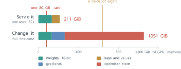
The bill arrives in three places: the weights that must be stored, the cache that grows with every conversation, and the extra state that adapting the model requires. The obvious response is to make each of them smaller. The difficulty is that a trained model carries no labels. Some of its bits, cached vectors, parameters and update directions are redundant for the work it is asked to do, and some of them hold exactly the capability that the training paid for. From outside the model the two look the same. The only way to tell them apart is to remove the part and measure what changes.
Definition 5.9 (Definition) Consider a component of a trained model, or of the memory needed to run or adapt it. It is redundant for a task if removing it, or storing it in a cheaper form, leaves the measured quality of the model on that task unchanged within the noise of the measurement. An efficiency method removes a component it claims to be redundant. Its price is the measured change in quality, together with any new cost the removal introduces.
The definition makes redundancy a property of a component, a task and a measurement together. A method that reports only the memory it saves states half of a result. Each method in this section is therefore given with the redundancy it claims and the price that was measured for it, and the section ends by putting the prices side by side.
The cache and what it holds
The first removal is the one §4.2 took for granted. A decoder writes one token at a time, and at each step the new token attends to every earlier position. Without a cache, step \(t\) would run the model over all \(t\) tokens of the sequence and compute a key and a value for each of them in every layer. Writing \(T\) tokens would then compute \[ \sum_{t=1}^{T} t = \frac{T(T + 1)}{2} \tag{5.20}\] key-value pairs per layer and head. For \(T = 4\) that is 10, and for \(T = 1{,}000\) it is 500,500. Figure 5.15 draws the first four steps.
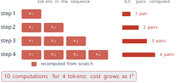
Under the causal mask of Equation 3.15 the key and value of position \(t\) depend only on positions up to \(t\), so once computed they never change. Every pair recomputed at a later step is identical to one already computed. Storing them as in Definition 4.7 reduces the work to one pair per token, \(T\) in total, and the earlier positions need no further pass through the network at all. The attention scores of the new token against all \(t\) cached keys must still be computed at every step, so the arithmetic of attention itself still grows with the square of the length. What the cache removes is the repeated forward pass over the prefix. By Definition 5.9 the removed work is redundant in the strictest sense: the numbers it produced were bit for bit the numbers already stored. The price is memory, and Equation 4.21 gives its size.
That memory decides how many people a server can talk to at once. Take a node of eight 80 GB cards, 640 GiB in all, serving Llama 3 70B to users who each hold a conversation of 32,768 tokens. The weights are held once, whatever the traffic, so they come off the top: \(640 - 131 = 509\) GiB remain for caches. With one key-value head per query head each conversation needs the 80 GiB of Equation 5.19, and \[ \left\lfloor \frac{509}{80} \right\rfloor = 6 \tag{5.21}\] conversations fit. With the eight shared key-value heads that Meta shipped, Equation 4.24 divides the cache by \(64 / 8 = 8\), to 10 GiB per conversation, and 50 conversations fit. The model and its answers are the same in both cases. The count is an upper bound, since a real server also needs memory for activations and loses some to fragmentation, but the factor of eight between the two designs is what the comparison is about.
Equation 4.21 gives the cache per token as the product \(2 L n_{kv} d_h b\) bytes. The cache of a conversation therefore has six factors once the length \(T\) is included: the two for key and value, the layers \(L\), the key-value heads \(n_{kv}\), the head dimension \(d_h\), the length \(T\) and the bytes per number \(b\). The user decides \(T\). The rest are design choices, and each method of §4.2 attacks one of them. Grouped-query attention (Definition 4.8) reduces \(n_{kv}\) and multi-query attention takes it to 1. Multi-head latent attention (Definition 4.10) replaces the factor \(2 n_{kv} d_h\) by the width of a cached latent. Figure 5.16 compares the three on the shape that DeepSeek-V3 uses, 128 heads of dimension 128 (DeepSeek-AI 2024b). Full multi-head attention caches 32,768 numbers per token and layer. Grouping the heads into eight would cache \(2 \times 8 \times 128 = 2{,}048\), sixteen times fewer. MLA caches a latent of 512 numbers and a shared rotary key of 64, 576 in all, which is the factor of 57 of Equation 4.30.
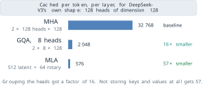
The prices of these removals were measured in the papers that proposed them, and §4.2 reported them. Multi-query attention lost some quality (Shazeer 2019). Grouped-query attention with eight groups came close to multi-head quality on the T5 models where it was tested (Ainslie et al. 2023). MLA was trained with its constraint from the start, and DeepSeek-AI reported that it matched or exceeded multi-head attention in their comparisons (DeepSeek-AI 2024a). In the terms of Definition 5.9, each claims that the separate keys and values of many heads are largely redundant, and each paid for the claim with a different amount of training and a different measured loss.
Rotary position embedding (Definition 4.9) belongs in the same list for a different reason. It removes the absolute index of a position from the attention score and keeps only the offset, as Equation 4.26 shows. The removal costs nothing on the contexts a model was trained on. It does not, by itself, let a model serve contexts longer than those. §4.2 showed why: an offset longer than any seen in training produces rotation angles the model has never seen, and Llama 3 reached its 128k context by a final stage of training on long documents, not from the rotation alone (Grattafiori et al. 2024). Long contexts are what make the cache large, and they are paid for twice, once in training and once in the memory of every conversation.
Parameters that do not run
The cache is the cost of a conversation. The second cost is the arithmetic of the weights. In a dense model every parameter takes part in the computation of every token, one multiplication and one addition each, so a forward pass costs about \(2N\) operations per token for a model of \(N\) parameters. This is the forward third of the \(6ND\) of Equation 4.1. On a dense model, capacity and cost per token are the same number: a model that holds more pays more for every token it writes. Figure 5.17 places six released models against that line.
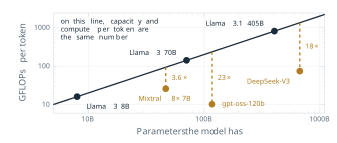
The three models below the line use mixture-of-experts layers (Definition 4.11). Their router runs only \(k\) of the \(E\) experts for each token, so most expert parameters do no work for a given token. It is tempting to conclude that the active fraction of the model is \(k/E\). That is wrong, because the router chooses only among the experts. Attention, the embeddings and the output projection run for every token. Splitting the parameters into the routed part \(N_{\text{exp}}\) and the always-active part \(N_{\text{on}}\) gives \[ N_{\text{active}} = N_{\text{on}} + \frac{k}{E} \, N_{\text{exp}} . \tag{5.22}\]
Mixtral 8x7B makes the count concrete (Jiang et al. 2024). It has 32 layers of width 4096. Each expert is a feed-forward network of the gated kind with three matrices of \(4096 \times 14{,}336\), and each layer has eight of them, so the experts hold \[ 32 \times 8 \times 3 \times 4096 \times 14{,}336 \approx 45.1 \times 10^{9} \] parameters. Attention uses 32 query heads and 8 key-value heads of dimension 128, so each layer has two matrices of \(4096 \times 4096\) and two of \(4096 \times 1024\), about \(1.3 \times 10^{9}\) over the 32 layers. The input embedding and the output projection over a vocabulary of 32,000 add \(2 \times 32{,}000 \times 4096 \approx 0.3 \times 10^{9}\). The total is \(46.7 \times 10^{9}\), with the routers and normalisation weights too small to change the first decimal. With \(k = 2\) of \(E = 8\), Equation 5.22 gives \[ N_{\text{active}} = 1.3 + 0.3 + \tfrac{2}{8} \times 45.1 \approx 12.9 \times 10^{9} , \tag{5.23}\] which is the figure Mistral AI announced with the model; the paper rounds it to 13 billion. The naive estimate \(\tfrac{2}{8} \times 46.7 = 11.7\) billion misses the always-active part. That part is also a floor: however sharp the router, a mixture of experts can save only the arithmetic of its experts.
The redundancy that a mixture of experts claims is that most tokens need only a few of the model’s specialised sub-networks. §4.2 named three prices: every parameter must be held, the experts are spread over many accelerators so tokens travel between them, and the scaling rule of Equation 4.13 was fitted to dense models. For Mixtral the first is the one that matters here. The saving is in arithmetic, not in memory: all 46.7 billion parameters must be held, although 12.9 billion are used for each token. The router adds a cost of its own: it can send a token to the wrong experts, and it learns a useful spread only with an extra loss that balances the load (Shazeer et al. 2017). Of the three bills, a mixture of experts reduces none of the memory. It reduces only the cost of computing each token.
Fewer bits per weight
The last factor of Equation 4.21 is \(b\), the bytes per stored number, and the same factor multiplies the memory of the weights. Training uses 16-bit numbers because gradient descent needs their range and resolution. Whether a trained weight needs them to do its work is a separate question.
Definition 5.10 (Definition) Quantisation stores each number of a group as one of \(2^{\beta}\) levels, with \(\beta\) the number of bits per number, together with a scale \(s\) shared by the group. In the symmetric form used here, with \(q_{\max} = 2^{\beta - 1} - 1\) and \(s = \max_i \lvert w_i \rvert / q_{\max}\) over the group, \[ w_q = \operatorname{round}\left(\frac{w}{s}\right), \qquad \hat{w} = s \, w_q , \tag{5.24}\] so the integer \(w_q\) is stored and \(\hat{w}\) is used in its place when the model runs. Post-training quantisation applies Equation 5.24 to the weights of a model that has finished training.
We write \(\beta\) for bits so that \(b\) keeps its meaning of bytes in Equation 4.21; this \(\beta\) is local to quantisation, not the coefficient of Equation 5.15 or the base of Definition 4.9. Rounding moves each number by at most half a step, so \[ \lvert w - \hat{w} \rvert \le \frac{s}{2} . \tag{5.25}\] Take a group of four weights, \((0.12, -0.31, 0.05, 0.47)\), and \(\beta = 4\), so \(q_{\max} = 7\) and \(s = 0.47 / 7 = 0.0671\). Dividing by \(s\) gives \((1.79, -4.62, 0.74, 7.00)\), which rounds to \((2, -5, 1, 7)\). Multiplying back gives \((0.134, -0.336, 0.067, 0.470)\). The errors are \(0.014\), \(0.026\), \(0.017\) and \(0\), all below \(s/2 = 0.034\). The same group at \(\beta = 2\) has \(q_{\max} = 1\) and \(s = 0.47\). The ratios \((0.26, -0.66, 0.11, 1.00)\) round to \((0, -1, 0, 1)\), and the weights come back as \((0, -0.47, 0, 0.47)\). Two of the four weights have become zero, and the error on the second is \(0.16\). Figure 5.18 draws the same effect for a whole distribution of weights.
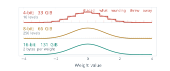
If the rounding errors are spread evenly across a step, each has variance \(s^2/12\). Removing one bit halves the number of levels, roughly doubles \(s\) and so multiplies that variance by about four. The arithmetic of rounding degrades smoothly, by about the same factor for every bit removed. A network need not respond smoothly, and the measurements below show that it does not.
Two difficulties are specific to large language models. The first is outliers. One weight of unusual size sets \(s\) for its whole group, and every other weight of the group is then rounded on a coarse grid. Tim Dettmers, Mike Lewis, Younes Belkada and Luke Zettlemoyer reported at the Conference on Neural Information Processing Systems (NeurIPS) in 2022 that transformers beyond about 6.7 billion parameters develop a few hidden dimensions with very large values (Dettmers et al. 2022). Their method, LLM.int8(), kept those dimensions in 16 bits and stored the rest in 8, and they reported no loss of quality up to 175 billion parameters. The usual remedy at fewer bits is to keep the groups small. A scale shared by 128 weights confines the damage of an outlier to its group, and a 16-bit scale for every 128 weights costs \(16/128 = 0.125\) extra bits per weight.
The second difficulty is that rounding each weight to its nearest level is not the best choice for the layer as a whole. Elias Frantar, Saleh Ashkboos, Torsten Hoefler and Dan Alistarh proposed GPTQ at the International Conference on Learning Representations (ICLR) in 2023 (Frantar et al. 2023). It quantises the weights of a layer one column at a time and adjusts the columns not yet quantised to cancel the error already made, using second-order information about the layer’s inputs from a small calibration set. They reported quantising a model of 175 billion parameters in about four hours on one GPU, to 3 or 4 bits per weight, with little loss. The assumption shared by these methods is that the output of each layer, not each weight, is what must be preserved.
The price of fewer bits is best measured on a quantity that still separates models. Benchmarks such as MMLU (§4.2) have saturated near the top, and a difference between two quantisations of one model falls inside their noise. Perplexity on held-out text still moves. For a text of \(T\) tokens it is the exponential of minus the average log-likelihood of Equation 3.27, \[ \mathrm{PPL} = \exp\left( -\frac{1}{T} \sum_{t=1}^{T} \log P\left(x_t \mid x_{<t}\right) \right) , \tag{5.26}\] the number of equally likely tokens among which the model is, on average, as uncertain as it is. A perfect model has perplexity 1. Wenqi Shao and colleagues reported the perplexity of LLaMA-2-70B on the WikiText2 corpus at each precision in their OmniQuant paper at ICLR 2024 (W. Shao et al. 2024). Table 5.2 gives their values with one scale per 128 weights.
| Bits per weight | Weights (GiB) | Round to nearest | GPTQ | OmniQuant |
|---|---|---|---|---|
| 16 | 131 | 3.31 | 3.31 | 3.31 |
| 4 | 33 | 3.46 | 3.42 | 3.40 |
| 3 | 25 | 3.97 | 3.85 | 3.78 |
| 2 | 16 | 27.27 | diverged | 6.55 |
Four bits cost GPTQ 0.11 in perplexity, about three per cent, for a quarter of the memory. Three bits cost 0.54 against the 16-bit model. At two bits rounding to the nearest level breaks the model, GPTQ diverged, and the best method in the table doubles the perplexity. The quality falls off a cliff between three bits and two for these methods, although the rounding arithmetic of Equation 5.25 worsened by about the same factor at every step. The location of the cliff depends on the method. Vage Egiazarian and colleagues, at the International Conference on Machine Learning (ICML) in 2024, quantised groups of weights jointly against learned codebooks instead of rounding each one (Egiazarian et al. 2024). They reported a WikiText2 perplexity of 3.94 for Llama 2 70B at about 2.07 bits per weight. The 16-bit model scored 3.12 at their longer evaluation context. That moved the cliff, at the price of a learned codebook for every group and a quantisation procedure far more costly than rounding.
Practice has settled near four bits. OpenAI released gpt-oss-120b in 2025 with the weights of its experts stored natively in the MXFP4 format, in which groups of 32 four-bit numbers share an 8-bit scale, \(4 + 8/32 = 4.25\) bits per weight (OpenAI 2025). With 117 billion parameters in all, the model runs on a single 80 GB accelerator. The redundancy that quantisation claims is precision below what the weights need. Its price is the measured loss of Table 5.2, which is small down to four bits and then is not. The table was measured on one model and one corpus. A different model, a different task, or a different method of quantisation needs its own measurement.
What adapting a model stores
The third bill is the cost of changing the model. Supervised fine-tuning minimises Equation 5.2 by gradient descent, and the methods of §5.1 that update a policy do the same with other losses. In every case each parameter needs a gradient, and the optimiser keeps state of its own. The usual optimiser is Adam, introduced by Diederik Kingma and Jimmy Ba at ICLR in 2015 (Kingma and Ba 2015). For each parameter it keeps a running average of the gradient and a running average of its square, so that it can scale the step of each parameter separately. Training in mixed precision keeps the weights and gradients in 16 bits for the arithmetic, and a 32-bit master copy of the weights with the two Adam averages in 32 bits for the update. Samyam Rajbhandari and colleagues at Microsoft counted the result in their 2020 paper on memory for training very large models (Rajbhandari et al. 2020): \[ \underbrace{2}_{\text{weights}} + \underbrace{2}_{\text{gradients}} + \underbrace{4}_{\text{master copy}} + \underbrace{4 + 4}_{\text{Adam averages}} = 16 \text{ bytes per parameter,} \tag{5.27}\] before the activations of the forward pass are counted. Only two of the sixteen bytes are the model that will be served. For Llama 3 8B, with \(8.03 \times 10^{9}\) parameters (Meta 2024), a full fine-tune needs \(8.03 \times 10^{9} \times 16 / 2^{30} \approx 120\) GiB, where the weights alone take 15 GiB. A card of 24 GB, a common size for a desktop computer, holds a fifth of that.
Edward Hu and seven colleagues at Microsoft asked in 2021 whether the change made by fine-tuning needs as many free numbers as the weights it changes (Hu et al. 2022). They built on a measurement by Armen Aghajanyan, Sonal Gupta and Luke Zettlemoyer, reported at the Annual Meeting of the Association for Computational Linguistics (ACL) in 2021 (Aghajanyan et al. 2021). Aghajanyan and colleagues restricted fine-tuning to a random low-dimensional subspace of the parameters and found that pre-trained models have a small intrinsic dimension for their tasks. Optimising only 200 numbers, projected back into the full space, brought RoBERTa to 90 per cent of its full fine-tuning performance on the MRPC paraphrase task. Larger models tended to have smaller intrinsic dimensions after the same number of pre-training updates. Hu and colleagues assumed that the update to each weight matrix has a low intrinsic rank as well.
Definition 5.11 (Definition) In low-rank adaptation (LoRA) a weight matrix \(W \in \mathbb{R}^{d_{\text{out}} \times d_{\text{in}}}\) of a pre-trained model is frozen, and the fine-tuned matrix is \[ W' = W + BA, \qquad B \in \mathbb{R}^{d_{\text{out}} \times r}, \quad A \in \mathbb{R}^{r \times d_{\text{in}}} , \tag{5.28}\] with a rank \(r\) much smaller than \(d_{\text{in}}\) and \(d_{\text{out}}\). Only \(A\) and \(B\) are trained. \(A\) starts from random values and \(B\) from zero, so \(W' = W\) at the start of training, and the product is usually scaled by a constant \(\alpha / r\).
The matrix \(BA\) has rank at most \(r\), so Equation 5.28 is the assumption written as a constraint. The number of trained parameters for one matrix falls from \(d_{\text{out}} d_{\text{in}}\) to \[ r \left( d_{\text{in}} + d_{\text{out}} \right) . \tag{5.29}\] For a \(4096 \times 4096\) attention projection that is \(16{,}777{,}216\) against \(8 \times 8{,}192 = 65{,}536\) at \(r = 8\), or 0.39 per cent. Figure 5.19 draws the construction. The loss is not changed. LoRA minimises the same Equation 5.2, or the reward-model loss of Equation 5.4, or the DPO loss of Equation 5.15; only the parameters that receive its gradient are different. Every method of §5.1 can therefore be run on a LoRA adapter, and the memory counts of §5.1 change with it. DPO, for example, held two networks, the policy and the frozen reference. When the policy is the frozen base plus an adapter, the reference is the same base with the adapter switched off, so one copy of the base weights serves for both.
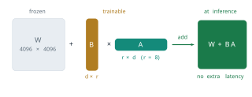
The last property explains much of LoRA’s adoption. Because \(BA\) has the shape of \(W\), it can be added into \(W\) once training ends, and the served model has exactly the size and speed of the original. Alternatively the adapter is kept separate, a file of a few megabytes, and many adapters for different tasks share one copy of the base.
Whether a low rank is enough is a question about the update, and Hu and colleagues measured it. They adapted the query and value projections of GPT-3 175B at ranks from 1 to 64 and compared the result with a full fine-tune of all 175 billion parameters (Hu et al. 2022). Table 5.3 gives their values.
| Rank \(r\) | 1 | 2 | 4 | 8 | 64 | Full fine-tune |
|---|---|---|---|---|---|---|
| WikiSQL accuracy (%) | 73.4 | 73.3 | 73.7 | 73.8 | 73.5 | 73.8 |
| MultiNLI accuracy (%) | 91.3 | 91.4 | 91.3 | 91.6 | 91.4 | 89.5 |
On WikiSQL every rank lies within half a point of the full fine-tune. On MultiNLI every rank lies about two points above it. Going from rank 1 to rank 64 multiplies the trained parameters by 64 and changes nothing measurable. Figure 5.20 draws the same values relative to the full fine-tune. Hu and colleagues also compared the subspaces learned at ranks 8 and 64 and found that their leading directions largely coincide, which is what a low intrinsic rank predicts. The redundancy LoRA claims is the full rank of the update. Its price is any part of the update that lies outside a rank-\(r\) subspace, and for these tasks that part was too small to measure.
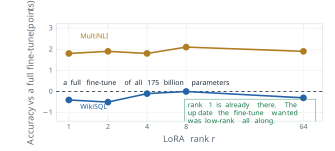
The assumption has limits, and Hu and colleagues stated one themselves. A task far from the pre-training data, such as one in a language the model has rarely seen, plausibly needs an update of higher rank, and a small \(r\) cannot be expected to work for every task. The evidence of Table 5.3 comes from tasks close to what GPT-3 already did well.
The memory of a LoRA fine-tune follows from Equation 5.27 applied to the trained parameters only. Take Llama 3 8B with \(r = 8\) on the query and value projections of all 32 layers. The query projection is \(4096 \times 4096\). With eight key-value heads of dimension 128 the value projection is \(1024 \times 4096\). By Equation 5.29 each layer trains \[ 8 \times (4096 + 4096) + 8 \times (4096 + 1024) = 65{,}536 + 40{,}960 = 106{,}496 \] parameters, and the 32 layers train \(3{,}407{,}872\), about 0.04 per cent of the model. At 16 bytes each their weights, gradients and optimiser state take about 55 MB. The frozen base must still be held in 16 bits to run the forward pass, 15 GiB, and the activations of a modest batch add about 3 GiB more, a figure that depends on batch size and sequence length. The total, \[ 15 + 0.05 + 3 \approx 18 \text{ GiB} , \tag{5.30}\] fits on a 24 GB card. Figure 5.21 compares it with the full fine-tune.
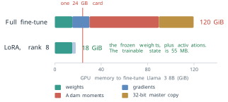
In Equation 5.30 the term that dominates is now the base, which is not being trained at all. Tim Dettmers, Artidoro Pagnoni, Ari Holtzman and Luke Zettlemoyer removed it at NeurIPS in 2023 with QLoRA (Dettmers et al. 2023). They stored the frozen base in 4 bits, in a format they called NormalFloat whose levels are spaced for normally distributed weights, quantised the scales themselves to save about a further third of a bit per weight, and trained a 16-bit LoRA adapter on top. Gradients pass through the dequantised base to the adapter, and the base is never updated. Their assumption was that a 4-bit base is a good enough substrate for the adapter, and they reported that QLoRA matched 16-bit fine-tuning on their benchmarks while fine-tuning a model of 65 billion parameters on one 48 GB card. For Llama 3 8B the base falls from 15 GiB to about 4, and the fine-tune of Equation 5.30 to about 7 GiB. QLoRA is two removals composed: precision from the base, and rank from the update.
LoRA was not the first method to train a small number of new parameters, and its predecessors differ from it in one respect: where the new parameters sit. Neil Houlsby and colleagues at Google proposed adapters at ICML in 2019 (Houlsby et al. 2019). An adapter is a small network inserted into each block, after the attention and after the feed-forward layer. It projects the \(d\)-dimensional state down to a bottleneck of size \(m\), applies a nonlinearity, projects back up, and adds the result to its input, so it has about \(2md\) parameters. On the GLUE benchmark their adapters came within 0.4 per cent of the performance of full fine-tuning while adding 3.6 per cent of the parameters for each task. Because of the nonlinearity an adapter cannot be folded into the weights around it, so it stays in the network and adds a little latency to every token served. Xiang Lisa Li and Percy Liang proposed prefix tuning at ACL in 2021 (Li and Liang 2021). It leaves every weight of the model unchanged and learns a short sequence of vectors that are placed, in every layer, in front of the keys and values of the real tokens, so that every token can attend to them. They reported results comparable to fine-tuning on generation tasks while training about 0.1 per cent of the parameters. The price is that the prefix occupies positions of the context, and its keys and values sit in the cache of every conversation. Figure 5.22 places the three methods in one block of the Transformer.
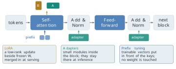
The three methods answer the same question with the same assumption, that the change fine-tuning needs is small enough to fit in a few new parameters. What separates them is what the new parameters cost after training. LoRA’s cost after merging is nothing, an adapter’s is a small fixed latency, and a prefix’s is context length. This difference, more than any difference in quality, accounts for LoRA’s place as the default method.
Composing the removals
The removals can be stacked, and the bill of Figure 5.14 can be paid down one removal at a time. Figure 5.23 does this for serving one conversation of 32,768 tokens on Llama 3 70B. As trained, with one key-value head per query head and 16-bit weights, the model asks for 211 GiB. Grouping the keys and values into eight heads leaves the weights unchanged and cuts the cache from 80 to 10 GiB, so the total falls to 141 GiB. Storing the weights in 4 bits cuts them from 131 to 33 GiB, and the total falls to 43 GiB, which fits on one 80 GB card.
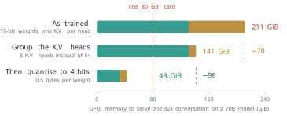
Each saving has its price, and the prices are measured on different models. For grouping, Ainslie and colleagues measured near-equal quality with eight groups on T5, and Meta adopted it for Llama 2’s larger models and every size of Llama 3. For four bits, Table 5.2 gives an increase of 0.11 in perplexity, but on Llama 2 70B, not Llama 3. A ledger of this kind is honest only when each price is measured on the model that pays it, and the second one here would need to be measured again before it was relied on.
The removals of this section are now design decisions made before training, not optimisations applied after it. Table 5.4 marks which of them four released models made, from each model’s own report.
| Model | Parameters, total and active | Mixture of experts | Grouped keys and values | Latent attention | 4-bit weights as released |
|---|---|---|---|---|---|
| Llama 3 70B (Grattafiori et al. 2024; Meta 2024) | 70.6B, all active | no | yes | no | no |
| Mixtral 8x7B (Jiang et al. 2024) | 46.7B, 12.9B active | yes | yes | no | no |
| DeepSeek-V3 (DeepSeek-AI 2024b) | 671B, 37B active | yes | no | yes | no |
| gpt-oss-120b (OpenAI 2025) | 117B, 5.1B active | yes | yes | no | yes |
Table 5.5 collects the claims and the prices.
| Removal | Redundancy claimed | Price paid |
|---|---|---|
| Key-value cache | recomputing keys and values already computed | memory that grows with every conversation |
| Rotary positions | the absolute index of a position | none on trained lengths; longer contexts still need training |
| Grouped or multi-query attention | a private key and value for every query head | some quality, more with fewer groups |
| Latent attention | storing keys and values at all | a rank constraint the model must be trained with |
| Mixture of experts | every parameter running for every token | a router that can err; memory for all experts; traffic between devices |
| Quantisation | precision below what the weights need | small loss to 4 bits, a cliff below 3 for rounding methods |
| Low-rank adaptation | the full rank of the fine-tuning update | updates outside a rank-\(r\) subspace |
What efficiency assumes and where it fails
Every price in Table 5.5 was measured on particular models, tasks and corpora, and Definition 5.9 makes that dependence part of the claim. Three limits follow.
The first is that a redundancy for one task can be a capability for another. A quantised model may lose little on the text of WikiText2 and more on arithmetic, on rare languages, or on long reasoning, where small errors in a few weights compound over many steps. The measurement that licenses a removal has to be made on the work the model will do.
The second is that the methods interact. A model whose weights are quantised has a different response to an adapter, and a quantised cache, also common in practice, adds its error to that of the weights. QLoRA showed that one such composition works well. It did not show that every composition does, and whether a 4-bit base limits what an adapter can learn is still studied.
The third limit is outside the methods altogether. Every removal in this section makes the same model cheaper to run or to adapt. None of them changes what the model knows. Its weights were fixed when training stopped, and a question about later events is answered from an outdated picture of the world, with the same confidence as any other. Fine-tuning can add knowledge only at the cost of another round of training for each change. The next chapter turns to the other route: placing the information a model needs into its context at the moment it answers.
Exercises
Llama 3 8B has \(L = 32\) layers, 32 query heads and \(n_{kv} = 8\) key-value heads of dimension \(d_h = 128\), and stores its cache in 16 bits. (a) Use Equation 4.21 to compute its cache per token and for one conversation of 8,192 tokens. (b) Repeat with one key-value head per query head.
- Its weights take 15 GiB. How many conversations of 8,192 tokens fit beside them on a 24 GB card in each case?
- Prove Equation 5.20, and compute the ratio of the key-value pairs computed without and with a cache for \(T = 1{,}000\). (b) With a cache, the new token at step \(t\) still computes \(t\) attention scores. Show that the total number of scores over \(T\) steps grows as \(T^2\), and explain why the cache is still worth having. (c) State precisely which property of the decoder makes a cached key identical to a recomputed one, and name an architecture from earlier in the book for which caching in this form would be wrong.
A mixture-of-experts model has \(N_{\text{on}} = 2.0 \times 10^{9}\) always-active parameters and \(N_{\text{exp}} = 56 \times 10^{9}\) parameters in its experts, with \(E = 16\) experts per layer and \(k = 2\). (a) Compute \(N_{\text{active}}\) from Equation 5.22 and the naive estimate \((k/E) (N_{\text{on}} + N_{\text{exp}})\). (b) By what factor does the compute per token change if \(k\) is raised to 4? (c) How much memory do the 16-bit weights need, and how does it compare with a dense model of the same compute per token?
Quantise the group of eight weights \((0.80, -0.05, 0.10, -0.12, 0.02, 0.07, -0.09, 0.11)\) with Equation 5.24 at \(\beta = 4\). (a) Give \(s\), the stored integers, the dequantised weights and the largest error, and check it against Equation 5.25. (b) Split the group into its first four and last four weights, give each its own scale, and repeat. (c) Explain the difference using the outliers of LLM.int8(), and compute the extra bits per weight of a 16-bit scale for groups of 4 and of 128.
- Show that a rounding error spread uniformly on \([-s/2, s/2]\) has variance \(s^2/12\).
- For weights in a fixed range, show that each extra bit improves the ratio of weight variance to rounding variance by about a factor of four, about 6 dB. (c) Compute from Table 5.2 the increase in perplexity of GPTQ from 16 to 4 bits and from 4 to 3 bits, and explain why (b) alone cannot predict the cliff. (d) Compute the memory of 117 billion weights at the 4.25 bits of MXFP4, and say why gpt-oss-120b in fact needs somewhat more.
- Count the trainable parameters of LoRA at \(r = 16\) on all four attention projections of Llama 3 8B: the query and output projections are \(4096 \times 4096\) and the key and value projections \(1024 \times 4096\), in 32 layers. Give the memory of their training state from Equation 5.27. (b) Prove that \(BA\) in Equation 5.28 has rank at most \(r\). (c) Show that \((W + BA)\mathbf{x} = W\mathbf{x} + B(A\mathbf{x})\), and count the extra multiplications per token of serving an unmerged adapter on one matrix. (d) Explain why \(B\) is set to zero at the start and what would go wrong if both \(A\) and \(B\) started from random values.
§5.1 counted the networks each alignment method holds: four for RLHF with PPO and two for DPO.
- For a 70B model in 16 bits, give the memory of the weights alone for each. (b) Recompute for DPO when the policy is the frozen base plus a LoRA adapter and the reference is the base with the adapter switched off, and again with a 4-bit base as in QLoRA. (c) A team merges the adapter into the base halfway through DPO training to save time, and continues. Explain what has happened to the reference policy of Equation 5.15.
A provider serves Llama 3 70B with eight key-value heads and 4-bit weights, 33 GiB, on one 80 GB card, to users who each hold 32,768 tokens. (a) How many conversations fit? (b) The provider also stores the cache in 8 bits, \(b = 1\). How many fit now? (c) Using Definition 5.9, write down the measurement that would justify each of the three removals for a service that answers questions about long legal contracts, and argue which removal is likely to be the riskiest for that service.